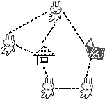
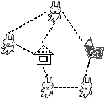

莠ｬ驛ｽ螟ｧ蟄ｦ 螟ｧ蟄ｦ髯｢諠ｱ蟄ｦ遐皮ｩｶ遘
遏･閭ｽ諠ｱ蟄ｦ蟆よ判 謨呎肢
冗炊蛹門ｭｦ遐皮ｩｶ謇 髱ｩ譁ｰ遏･閭ｽ邨ｱ蜷育皮ｩｶ繧ｻ繝ｳ繧ｿ繝ｼ (AIP)

 
(譚ｱ笳九Ρ笳銀雷繝俄雷笳九お笳九↓縺ｦ)
繧ｳ繝ｳ繝斐Η繝ｼ繧ｿ繧堤畑縺◆繝ー繧ｿ隗｣譫先橿陦薙遐皮ｩｶ縺ｨ髢狗匱繧定｡後▲縺ｦ縺ｋ遐皮ｩｶ閠〒縺吶
縲讖滓｢ｰ蟄ｦ鄙縲阪→蜻ｼ縺ｰ繧後ｋ繧ｳ繝ｳ繝斐Η繝ｼ繧ｿ遘大ｭｦ縲∽ｺｺ蟾･遏･閭ｽ縺ｮ荳蛻㍽繧貞ｰる摩縺ｨ縺励※縺∪縺吶
迚ｹ縺ｫ繧ｰ繝ｩ繝繧繝阪ャ繝医Ρ繝ｼ繧ｯ讒矩繧偵ｂ縺｣縺溘ョ繝ｼ繧ｿ縺ｫ縺翫￠繧九莠域ｸｬ繝｢繝Μ繝ｳ繧ｰ繧貞ｾ玲э縺ｨ縺励※縺∪縺吶
霑代＃繧阪繧ｯ繝ｩ繧ｦ繝峨た繝ｼ繧ｷ繝ｳ繧ｰ繧繝偵Η繝ｼ繝槭Φ繧ｳ繝ｳ繝斐Η繝ー繧ｷ繝ｧ繝ｳ縺ｫ繧医ｋ莠ｺ髢薙→讖滓｢ｰ縺ｮ蜊碑ｪｿ蝠城｡瑚ｧ｣豎ｺ縺ｫ蜿悶ｊ邨ｓ縺ｧ縺∪縺吶
<鮖ｿ蟲ｶ繧呈欠蟆取蕗蜩｡縺ｨ縺励※讀懆ｨ弱＠縺ｦ縺翫ｉ繧後ｋ譁ｹ縺ｸ >
<繝ー繧ｿ隗｣譫先橿陦薙ｒ繝薙ず繝阪せ縺ｫ逕溘°縺励◆縺ｰ鷹俣莨∵･ｭ縺ｮ譁ｹ縺ｸ >
<遐皮ｩｶ螳､縺ｮ繝壹繧ｸ縺ｯ縺薙■繧 >